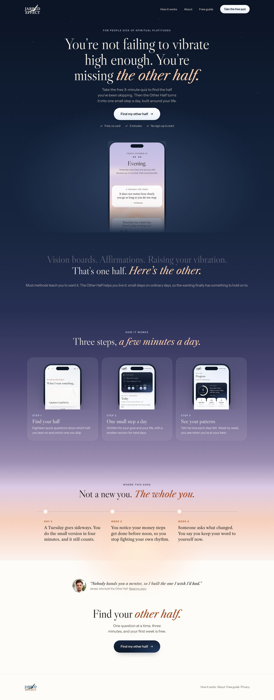
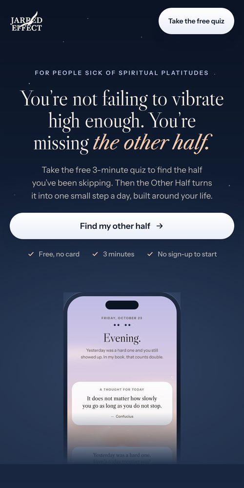
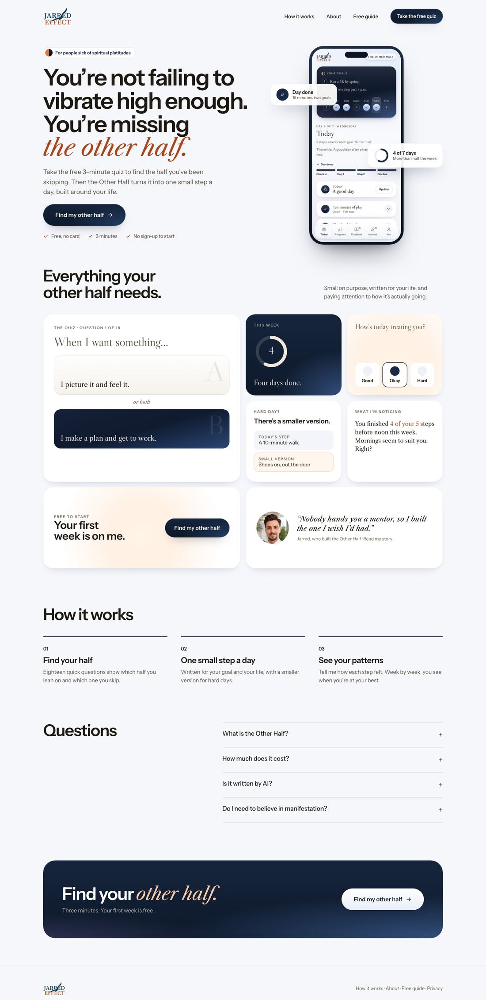
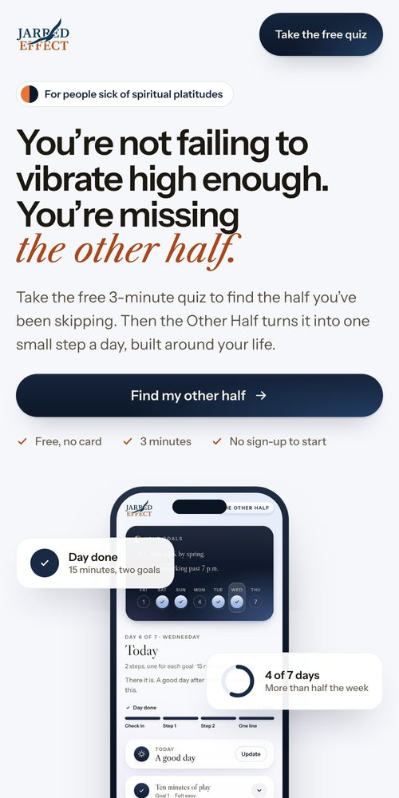
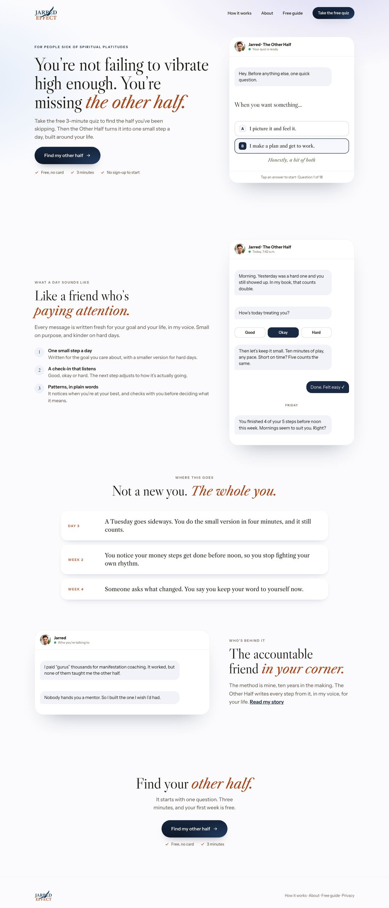
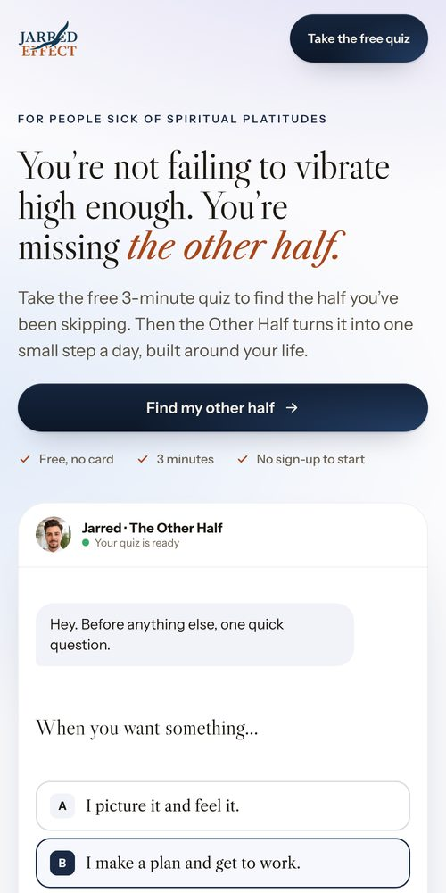

<title>Fresh Directions</title>
<meta name="claude:viewport-fit-sides" content="cover">
<link rel="preconnect" href="https://fonts.googleapis.com"><link rel="preconnect" href="https://fonts.gstatic.com" crossorigin>
<link rel="stylesheet" href="https://fonts.googleapis.com/css2?family=Instrument+Sans:wght@400;500;600&family=Libre+Caslon+Display&family=Libre+Caslon+Text:ital@0;1&display=swap">
<style>
/* Three homepage directions designed from scratch, without the current site's design: whole pages to pick from */
:root{--bg:#f4f5f9;--card:#ffffff;--fg:#1c1812;--dim:#574f43;--faint:#6b6254;--line:rgba(28,24,18,.1);--accent:#1a2a44;--rust:#a8471c;--tint:#eef2fa;--pick:#1a2a44;--on-pick:#f4eee4;
  --serif:"Libre Caslon Display","Libre Caslon Text",Georgia,serif;--serif-t:"Libre Caslon Text",Georgia,serif;--sans:"Instrument Sans","Helvetica Neue",Arial,sans-serif}
@media (prefers-color-scheme:dark){:root:not([data-theme="light"]){--bg:#0d141f;--card:#151e2c;--fg:#efe7da;--dim:#c4bcaf;--faint:#a39a8c;--line:rgba(239,231,218,.12);--accent:#b9c9ea;--rust:#f3a378;--tint:rgba(185,201,234,.08);--pick:#b9c9ea;--on-pick:#0d141f;color-scheme:dark}}
:root[data-theme="dark"]{--bg:#0d141f;--card:#151e2c;--fg:#efe7da;--dim:#c4bcaf;--faint:#a39a8c;--line:rgba(239,231,218,.12);--accent:#b9c9ea;--rust:#f3a378;--tint:rgba(185,201,234,.08);--pick:#b9c9ea;--on-pick:#0d141f;color-scheme:dark}
*{box-sizing:border-box}
body{margin:0;background:var(--bg);color:var(--fg);font-family:var(--sans);font-size:16px;line-height:1.55;-webkit-font-smoothing:antialiased}
.wrap{max-width:76rem;margin:0 auto;padding-block:3rem 4rem;padding-left:max(16px,env(safe-area-inset-left,0px));padding-right:max(16px,env(safe-area-inset-right,0px))}
.kick{margin:0;font-size:.75rem;font-weight:600;letter-spacing:.16em;text-transform:uppercase;color:var(--accent)}
h1,h2{font-family:var(--serif);font-weight:400;margin:0;text-wrap:balance;letter-spacing:-.01em}
h1{margin-top:.75rem;font-size:clamp(2rem,4.5vw,3.25rem);line-height:1.05}
.lead{max-width:46rem;margin:1rem 0 0;font-size:1.125rem;color:var(--dim);text-wrap:pretty}
.two{display:grid;grid-template-columns:repeat(auto-fit,minmax(min(20rem,100%),1fr));gap:.75rem;margin:2rem 0 0}
.two div{padding:1.125rem 1.25rem;border-radius:1rem;background:var(--card);box-shadow:inset 0 0 0 1px var(--line)}
.two b{display:block;margin-bottom:.25rem;font-weight:600}
.two p{margin:0;font-size:.9375rem;color:var(--dim)}
.opt{margin-top:3.5rem;padding:1.75rem;border-radius:1.75rem;background:var(--card);box-shadow:inset 0 0 0 1px var(--line),0 1.5rem 3rem -2.5rem rgba(6,12,24,.4)}
.opt.is-rec{box-shadow:inset 0 0 0 2px var(--pick),0 1.5rem 3rem -2.5rem rgba(6,12,24,.4)}
.oh{display:flex;flex-wrap:wrap;align-items:baseline;gap:.5rem 1rem}
.letter{font-family:var(--serif);font-size:2.25rem;line-height:1;color:var(--rust)}
.opt h2{font-size:clamp(1.5rem,3vw,2rem);line-height:1.15}
.rec{display:inline-flex;align-items:center;height:1.75rem;padding:0 .75rem;border-radius:99px;background:var(--pick);color:var(--on-pick);font-size:.75rem;font-weight:600;letter-spacing:.06em;text-transform:uppercase}
.idea{margin:.625rem 0 0;font-family:var(--serif-t);font-style:italic;font-size:1.1875rem;text-wrap:pretty}
.shots{display:grid;grid-template-columns:minmax(0,1fr) minmax(0,15rem);gap:1.25rem;align-items:start;margin-top:1.5rem}
@media (max-width:760px){.shots{grid-template-columns:minmax(0,1fr)}.shots figure+figure{max-width:15rem;margin:0 auto}}
figure{margin:0}
.scroll{max-height:40rem;overflow-y:auto;overscroll-behavior:contain;border-radius:.875rem;box-shadow:0 0 0 1px var(--line),0 1.25rem 2.5rem -1.75rem rgba(6,12,24,.5);background:#fdfdfc}
.scroll img{display:block;width:100%;height:auto}
.phone{display:block;width:100%;height:auto;border-radius:1.5rem;box-shadow:0 0 0 1px var(--line),0 1.25rem 2.5rem -1.75rem rgba(6,12,24,.5)}
figcaption{margin-top:.5rem;font-size:.75rem;font-weight:600;letter-spacing:.12em;text-transform:uppercase;color:var(--faint)}
.why{display:grid;grid-template-columns:repeat(auto-fit,minmax(min(16rem,100%),1fr));gap:1rem 1.5rem;margin:1.5rem 0 0;padding:1.25rem 0 0;border-top:1px solid var(--line)}
.why h3{margin:0 0 .25rem;font-size:.75rem;font-weight:600;letter-spacing:.12em;text-transform:uppercase;color:var(--faint)}
.why p{margin:0;font-size:.9375rem;color:var(--dim);text-wrap:pretty}
.plan{margin-top:3.5rem;padding:1.75rem;border-radius:1.75rem;background:var(--tint)}
.plan h2{font-size:1.625rem}
.plan table{width:100%;margin-top:1rem;border-collapse:collapse;font-size:.9375rem}
.plan th,.plan td{padding:.75rem .5rem;border-bottom:1px solid var(--line);text-align:left;vertical-align:top}
.plan th{font-weight:600}
.plan td{color:var(--dim)}
.tbl{overflow-x:auto}
.ask{margin:1.5rem 0 0;font-weight:600}
</style>
<main class="wrap">
  <p class="kick">The Other Half · Homepage</p>
  <h1>Three directions, designed from scratch</h1>
  <p class="lead">None of these borrow from the current site’s design: no handwritten notes, no Vitruvian figure, no magazine labels, no grain. Each is a complete homepage built around the app, in the app’s own colors and type, with the same words, so you’re judging the design and the feeling.</p>
  <div class="two">
    <div><b>Scroll inside each page</b><p>Each one is a full homepage. Scroll inside the frame to see all of it.</p></div>
    <div><b>Your story still has a home</b><p>Each direction gives you one moment on the homepage, in its own style, and leads to About for the full story.</p></div>
  </div>
  <section class="opt">
    <div class="oh"><span class="letter">A</span><h2>Night to dawn</h2></div>
    <p class="idea">One long cinematic scroll. The page starts in the app’s night sky and the light rises section by section until it ends in morning: the dark before the shift, then the other half arriving.</p>
    <div class="shots">
      <figure><div class="scroll"></div><figcaption>Full page · scroll inside</figcaption></figure>
      <figure><figcaption>Phone</figcaption></figure>
    </div>
    <div class="why"><div><h3>Why it converts</h3><p>It’s an emotional story people feel as they scroll, which keeps them reading. The light buttons glow against the night, so the action is impossible to miss.</p></div><div><h3>How it feels</h3><p>Cinematic, calm and premium, like the best meditation apps. The most memorable of the three.</p></div><div><h3>The trade-off</h3><p>Dark pages need careful copy and contrast. The app itself is mostly light, so the first impression and the product feel different.</p></div></div>
  </section>
  <section class="opt">
    <div class="oh"><span class="letter">B</span><h2>Bento</h2></div>
    <p class="idea">A crisp, modern product page. A confident headline with the product beside it, then a grid of live pieces of the app: the quiz, the check-in, the ring, the small version and “What I’m noticing”, each as its own tile.</p>
    <div class="shots">
      <figure><div class="scroll"></div><figcaption>Full page · scroll inside</figcaption></figure>
      <figure><figcaption>Phone</figcaption></figure>
    </div>
    <div class="why"><div><h3>Why it converts</h3><p>The clearest picture of what you get, scannable in seconds. Every tile is proof the product is real and thoughtful.</p></div><div><h3>How it feels</h3><p>Sharp, current, confident. Like a top tech product page.</p></div><div><h3>The trade-off</h3><p>The least emotional of the three, and the look many well-made apps share.</p></div></div>
  </section>
  <section class="opt is-rec">
    <div class="oh"><span class="letter">C</span><h2>The conversation</h2><span class="rec">My pick</span></div>
    <p class="idea">The app speaks as you, so the homepage does too. The top of the page is the start of a real conversation with the first question as answers to tap, and the page shows what a day of talking with the Other Half sounds like.</p>
    <div class="shots">
      <figure><div class="scroll"></div><figcaption>Full page · scroll inside</figcaption></figure>
      <figure><figcaption>Phone</figcaption></figure>
    </div>
    <div class="why"><div><h3>Why it converts</h3><p>It starts the quiz in the first screen and shows the real experience, your voice included. Visitors feel the product before they sign up.</p></div><div><h3>How it feels</h3><p>Warm, personal and modern at once. Your personal brand is the product’s voice, so the two finally stop competing.</p></div><div><h3>The trade-off</h3><p>Chat layouts need real, specific messages to shine, so the copy has to stay as good as this.</p></div></div>
  </section>
  <section class="plan">
    <h2>How I’d decide</h2>
    <div class="tbl"><table>
      <tr><th></th><th>A · Night to dawn</th><th>B · Bento</th><th>C · Conversation</th></tr>
      <tr><th>First impression</th><td>Most emotional</td><td>Clearest</td><td>Most personal</td></tr>
      <tr><th>Shows the product</th><td>One phone, then three</td><td>Many live pieces</td><td>The real conversation</td></tr>
      <tr><th>Your personal brand</th><td>A quote near the end</td><td>One tile</td><td>Built in: the app speaks as you</td></tr>
      <tr><th>Matches the app</th><td>Its night and dawn skies</td><td>Its cards and rings</td><td>Its voice and check-ins</td></tr>
    </table></div>
    <p class="ask">Tell me A, B or C (or a mix, like “C with A’s night-to-dawn ending”), or leave a comment on any part of a page.</p>
  </section>
</main>
